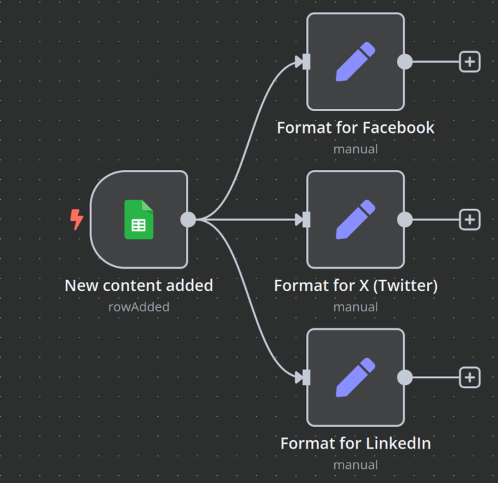

Technical execution meets storytelling
Engineering media workflows for maximum impact.
Digital Media Production
I have hands-on experience in digital media production, combining technical execution with storytelling across multiple platforms.
My approach is both technical and strategic: I adapt formats, pacing, and visuals to each platform's constraints and audience expectations, ensuring clarity, consistency, and engagement. I see media not just as communication, but as a system — one that can be engineered, automated, and continuously improved.
Video Production & Editing
I produce and edit video content using professional tools such as CyberLink PowerDirector and DaVinci Resolve, covering the full workflow from raw footage to final publication.
This includes editing, color correction, sound adjustment, formatting, and optimization for different distribution channels. Each video is crafted to meet platform specifications and audience expectations, ensuring maximum impact and engagement.
Multi-Platform Content Strategy
I create and manage content for major social and media platforms, adapting formats, pacing, and visuals to each platform's unique constraints and audience expectations:
- YouTube: Long-form and structured video content with SEO optimization
- Instagram: Short-form, reels, and visual storytelling for engagement
- X / Twitter: Informative and promotional media formats for reach
- Snapchat: Short, dynamic, mobile-first content for younger audiences

AI-Enhanced Production Workflows
This media experience is often combined with my technical, AI, and automation skills, enabling faster content production workflows, consistent branding across platforms, and data-driven optimization of publishing processes.
By applying engineering principles to media production, I create repeatable, scalable systems that maintain quality while increasing output velocity. AI tools assist with script generation, editing suggestions, thumbnail optimization, and content scheduling.
Engineering Approach to Media
Media is communication, but it's also a system that can be engineered, automated, and continuously improved. I bring the same rigor to content production that I apply to software engineering:
- Workflow Automation: Scripting repetitive editing tasks and publishing workflows
- Quality Standards: Consistent branding, formatting, and technical specifications
- Data-Driven Optimization: Analytics-informed content strategy and A/B testing
- Tool Integration: Connecting editing tools, automation platforms, and distribution channels
Media as a Technical System
My unique combination of media production skills and technical engineering expertise enables me to build content systems that scale:
- Faster Production Cycles: Automated workflows reduce time from concept to publication
- Consistent Branding: Templates, presets, and automated quality checks ensure brand consistency
- Cross-Platform Optimization: Single source content adapted intelligently for each platform
- Performance Analytics: Data integration and visualization for informed content decisions
- Scalable Infrastructure: Systems that grow with content volume without sacrificing quality
Whether producing content for personal branding, client campaigns, or educational purposes, I combine creative storytelling with engineering efficiency to deliver impact at scale.